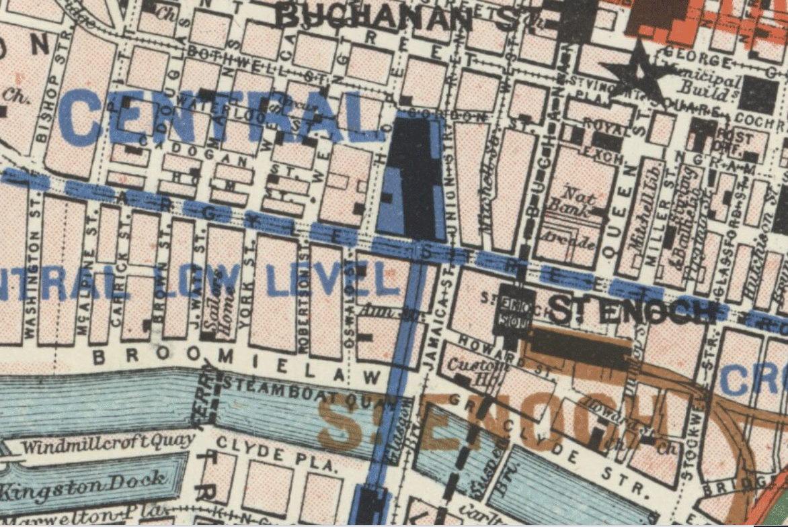

The year is 2020. The location Glasgow. It is not safe to wander the streets because of the Zombie outbreak. Nobody knows what is going on.
You and your team are trapped in an office and need to solve various puzzles in order to escape..
Will you be able to work together and solve the challenges before the 30 minute deadline expires?
So far you have found only a 100 year old map of Glasgow to help you!
Tracker: {{locationTracker.currentStatus.get('SecretTunnel')}}
